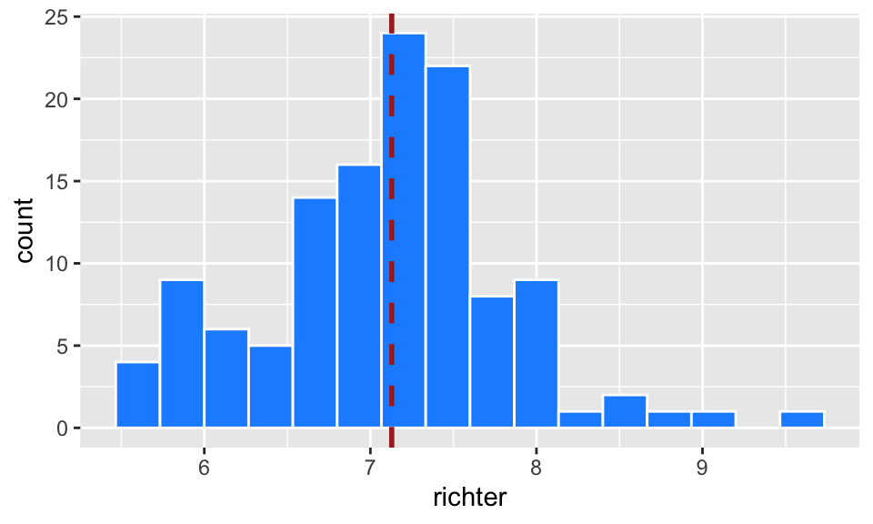
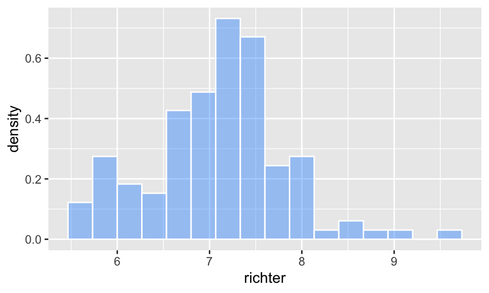
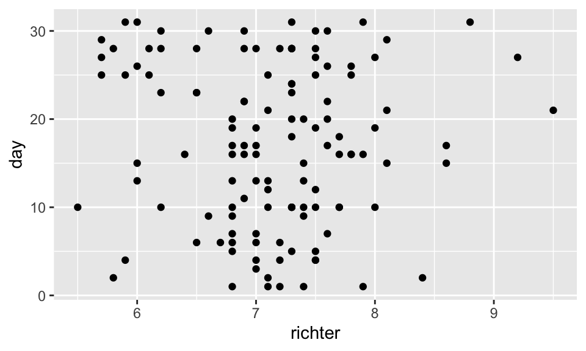
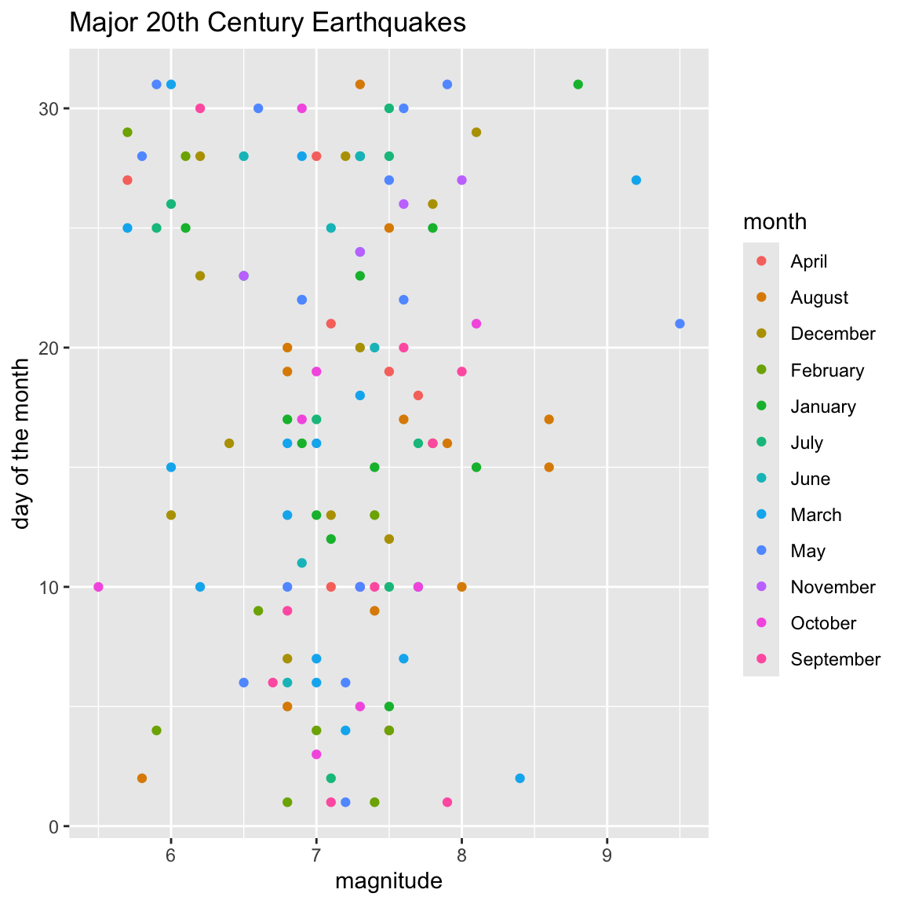
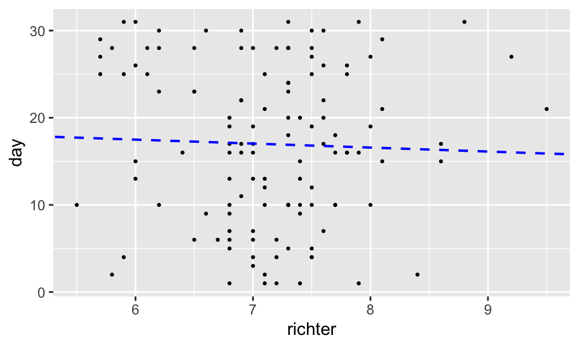
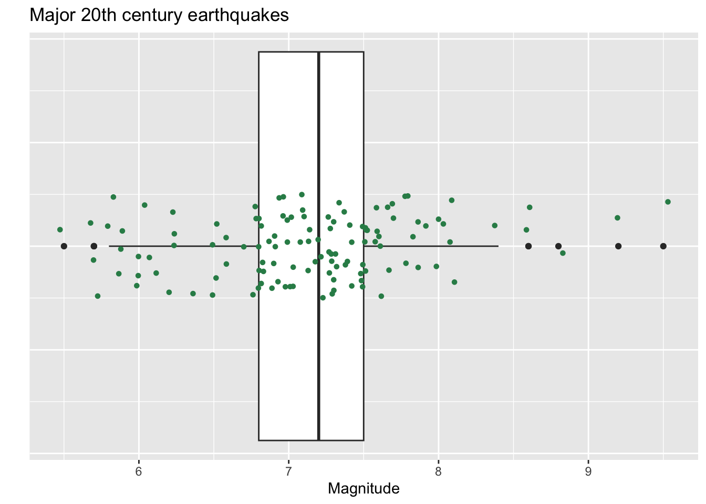
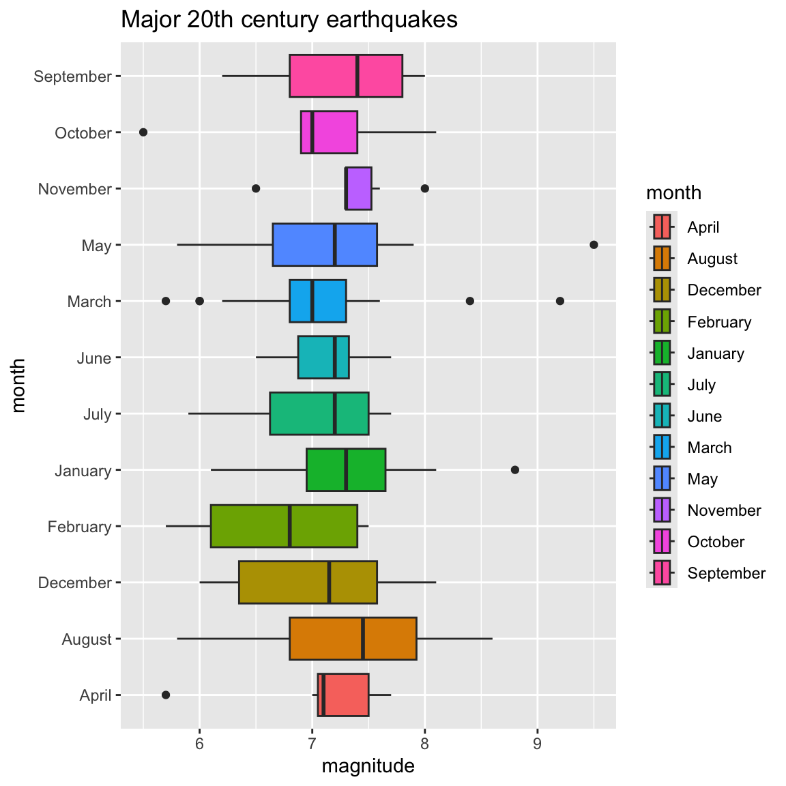
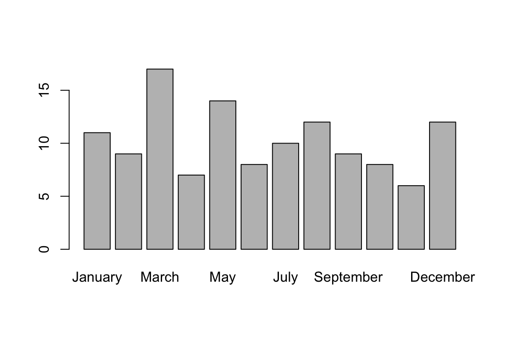

We can produce graphics in base R, as demonstrated in the data and descriptive statistics page.
We can also produce superb graphics using the powerful package ggplot2.
In this tutorial we focus on producing three types of graphics with ggplot2: histograms, scatter plots, and box plots.
I encourage you to replicate all the graphs in this tutorial in your own RStudio session.
The ggplot2 package is part of the tidyverse package, so begin your session by loading the tidyverse. Recall, do do this, run the line
library(tidyverse)With the tidyverse loaded, you are ready to use the ggplot commands for generating plots.
All the plots in this tutorial use the earthquakes data set that comes with the openintro package from our text. This data frame contains information about all major 20th century earthquakes.
If you have installed the openintro package, and loaded it into your session, run this line
df <- earthquakesAlternatively, you can load the data set into your session directly from its url:
df <- read.csv("https://www.openintro.org/data/csv/earthquakes.csv")Let’s check the first few rows
head(df,3)## # A tibble: 3 × 7
## year month day richter area region deaths
## <dbl> <chr> <dbl> <dbl> <chr> <chr> <dbl>
## 1 1902 April 19 7.5 Quezaltenango and San Marco Guatemala 2000
## 2 1902 December 16 6.4 Uzbekistan Russia 4700
## 3 1903 April 28 7 Malazgirt Turkey 3500Note Plotting data with ggplot requires the data to be within a data frame. ggplot will not work on a vector.
The key to using ggplot: Begin with the
ggplot(), and follow that with layers describing the plot(s) and features of the plot(s).
Example 1: A histogram of all magnitudes (on the richter scale):
ggplot(data=df)+
geom_histogram(aes(x=richter),col="white",fill="steelblue",bins=10) +
ggtitle("20th century Earthquakes") +
xlab("Magnitutde on the Richter scale")Notes on code:
df data frame. Three layers follow this initial linerichter, and adds color to the bars, along with how many bins to make.Remarks:
We specify variables involved in a plot within the aes() command, aes being short for aesthetic. The dots and lines in plots have certain locations, colors, shapes, and sizes. In ggplot, these features are called aesthetics.
Add that + sign at the end of a line if you plan to add another layer.
Key layer: Use
geom_histogram(), and specify x insideaes().
ggplot(data = df) +
geom_histogram(aes(x=richter))ggplot(data = df) +
geom_histogram(aes(x=richter),bins = 20,col="blue",fill="yellow") +
ggtitle("20th century Earthquakes") +
xlab("Magnitude on the Ricther scale")The col option colors the boundary of each bar, the fill option colors the interior of each bar. If we want to change the y-axis label, we use the code ylab("enter new label here inside quotes").
Specifying the bins for a histogram is good practice. You can either specify the bin widths with the binwidth option inside the geom_histogram() command, or you can specify the total number of bins with the bins option.
binwidth optionIn the following graph, each bin has width 0.4.
ggplot(data = df) +
geom_histogram(aes(x=richter),col="white",binwidth = 0.4)bins optionIn the following plot we create 16 equal width bins
ggplot(data = df) +
geom_histogram(aes(x=richter),col="white",bins = 16)If you’re not a fan of the gray plot background, you can change the theme. Here are two other options:
ggplot(data=df)+
geom_histogram(aes(x=richter),col="white",fill="steelblue",bins=10) +
ggtitle("20th century Earthquakes") +
xlab("Magnitutde on the Richter scale")+
theme_classic()
ggplot(data=df)+
geom_histogram(aes(x=richter),col="white",fill="steelblue",bins=10) +
ggtitle("20th century Earthquakes") +
xlab("Magnitutde on the Richter scale") +
theme_bw()Instead of a histogram of counts, we can produce a histogram of relative frequencies by adding the option aes(y = ..density..) as below. This will produce a histogram that records the proportion of the values falling in each bin, not the total counts.
ggplot(df) +
geom_histogram(aes(x=richter,y = ..density..), bins=16, col="white", fill="dodgerblue",alpha = 0.4)Note: The alpha option refers to the opacity of the fill color. Values of alpha range from 0 to 1, with lower values corresponding to more transparent colors.
ggplot(df) +
geom_density(aes(x=richter)) +
geom_vline(aes(xintercept=mean(richter)),
color="blue", linetype="dashed", size=1)
The geom_density() function gives an idealized density plot rather than a histogram.
The geom_vline() option places a vertical line in the graph, for which we’ve specified these options: the color is blue, it is dashed, and it hits the x-axis at the mean value of the richter variable.
Key layer: Use the
geom_point()plot type command, and specify x and y insideaes().
Although there is likely no association, we can plot earthquake magnitude against the day of the month on which it occurred.
ggplot(data = df) +
geom_point(aes(x=richter,y=day))ggplot(data = df) +
geom_point(aes(x=richter,y=day))+
xlab("magnitude") +
ylab("day of the month") +
ggtitle("Major 20th Century Earthquakes") +
theme_bw()
Note: R has lots (657) of built-in color names. You can see the names in RStudio if you run colors().
We can color points in a scatter plot according to a categorical variable by specifying col = this variable within the aes() command.
ggplot(data = df) +
geom_point(aes(x=richter,y=day,col=month))+
xlab("magnitude") +
ylab("day of the month") +
ggtitle("Major 20th Century Earthquakes")We have two ways to add a line to a plot in ggplot.
The first approach is to add the line by specifying the slope and y-intercept using geom_abline(slope = , intercept = ).
For instance, the slope and \(y\)-intercept for the least squares line in the faithful example are 20.227 and -0.4561, respectively (found by using the code `lm(day~richter,df)).
Knowing these values we can add a line to a scatter plot by having two layers in our plot: a geom_point layer which plots the points, and a geom_abline layer which plots the line.
ggplot(data = df) +
geom_point(aes(x=richter,y=day))+
geom_abline(slope = -0.4561, intercept = 20.227)
Note: We can change the size of the points and the size of the line, and we can change the linetype in the geom_abline() layer.
ggplot(data = df) +
geom_point(aes(x=richter,y=day),size=.5)+
geom_abline(slope = -0.4561, intercept = 20.227,col="blue",linetype="dashed",size=.7)The second approach to fitting a line to data is to use the geom_smooth()command. Here’s how to add the least squares regression line to the scatter plot:
ggplot(data = df,aes(x=richter,y=day)) +
geom_point(size=.5)+
geom_smooth(method='lm', formula=y~x,se=FALSE) +
theme_bw()
Note: Now the x and y coordinates in the plot are specified within the ggplot command since both the geom_smooth and geom_point commands require them. Alternatively, we could have indicated them in both layers.
Key layer: Use the
geom_boxplot()plot type command.
ggplot(data = df) +
geom_boxplot(aes(x=richter)) +
xlab("magnitude") +
ggtitle("Major 20th century earthquakes")This plot is unsatisfying because it gives values on the y-axis, which are meaningless in the context of this box plot. We can hide them:
ggplot(data = df) +
geom_boxplot(aes(x=richter)) +
xlab("Magnitude") +
ggtitle("Major 20th century earthquakes")+
theme(axis.ticks.y = element_blank(),
axis.text.y = element_blank())ggplot(data = df) +
geom_boxplot(aes(x=richter)) +
geom_jitter(aes(x=richter,y=0),col="seagreen",height=.1,size=1.2)+
xlab("Magnitude") +
ylab("") ggtitle("Major 20th century earthquakes")+
theme(axis.ticks.y = element_blank(),
axis.text.y = element_blank())## NULLNote: The geom_jitter() command is the same as the geom_point() with the exception that the computer randomly moves the points a tiny bit(a little “jitter”). This feature is a nice way to see multiple points that might otherwise be stacked right on top of one another. The height=.1 option means I’m letting the y-coordinate of the point (the height) vary plus or minus .1 units from its actual value.
The package ggplot makes nice side-by-side box plots quite easily.
If \(x\) is a numerical variable and \(y\) is a categorical variable, we can determine side-by-side box plots for the values of \(x\) grouped by the values of \(y\).
ggplot(data = df) +
geom_boxplot(aes(x=richter,y=month)) +
xlab("magnitude") +
ylab("month") +
ggtitle("Major 20th century earthquakes")
We can fill box plots with color according to a categorical variable using the fill option.
ggplot(data = df) +
geom_boxplot(aes(x=richter,y=month,fill=month)) +
xlab("magnitude") +
ylab("month") +
ggtitle("Major 20th century earthquakes")The first line of code below redefines the month column in a way that specifies the months in the correct order.
We can also hide the legend if it is superfluous, as it is in this case, by adding show.legend = FALSE inside the geom_boxplot() command.
df$month = factor(df$month, levels=month.name)
ggplot(data = df) +
geom_boxplot(aes(x=richter,y=month,fill=month),show.legend=FALSE) +
xlab("magnitude") +
ylab("month") +
ggtitle("Major 20th century earthquakes")As mentioned in the histogram section, the alpha option adjusts the opacity of a color in a plot. The closer alpha is to 0, the more transparent it becomes, and the closer to 1, the more opaque it becomes. In the graph below the three box plots are all filled with the color “orange” but with different alpha values.
ggplot(data = df) +
geom_boxplot(aes(x=richter,y=month),fill="orange",alpha=seq(from=0,to=1,by=1/11),show.legend=FALSE) +
xlab("magnitude") +
ylab("month") +
ggtitle("Major 20th century earthquakes")
In Base R we can visualize the frequencies for a categorical variable as follows:
barplot(table(df$month))We can also create a bar plot with gglplot with the following code:
ggplot(data=df,aes(x=month))+
geom_bar(stat="count")Note We can specify colors manually, change bar width, add labels, and even rotate them so they look less crowded. We can also specify the limits of the values on the y-axis to be, say, 0 to 20:
colors=c("wheat","steelblue","tomato","seagreen","yellow","purple",
"pink","orange","brown3","dodgerblue","gray","darkblue")
ggplot(data=df,aes(x=month))+
geom_bar(stat="count", width=.5, fill=colors)+
ylim(0,20)+
ggtitle("Number of earthquakes by month")+
theme(axis.text.x=element_text(angle=60,vjust=.5))
The following page has a downloadable ggplot cheat sheet (pdf)